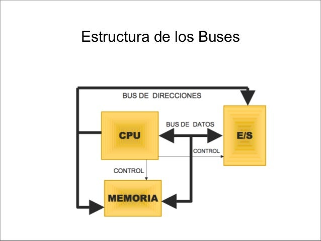

1.2.4.2 Estructura de Buses
Existen dos organizaciones físicas de operaciones E/S que tienen que ver con los buses que son:
Bus único
Bus dedicado
La primera gran diferencia entre estas dos tipos de estructuras es que el bus único no permite un controlador DMA (todo se controla desde la CPU), mientras que el bus dedicado si que soporta este controlador.
El bus dedicado trata a la memoria de manera distinta que a los periféricos (utiliza un bus especial) al contrario que el bus único que los considera a ambos como posiciones de memoria (incluso equipara las operaciones E/S con las de lectura/escritura en memoria). Este bus especial que utiliza el bus dedicado tiene 4 componentes fundamentales:
Datos: Intercambio de información entre la CPU y los periféricos.
Control: Lleva información referente al estado de los periféricos (petición de interrupciones).
Direcciones: Identifica el periférico referido.
Sincronización: Temporiza las señales de reloj.
La mayor ventaja del bus único es su simplicidad de estructura que le hace ser más económico, pero no permite que se realice a la vez transferencia de información entre la memoria y el procesador y entre los periféricos y el procesador.
Por otro lado el bus dedicado es mucho más flexible y permite transferencias simultáneas. Por contra su estructura es más compleja y por tanto sus costes son mayores.
